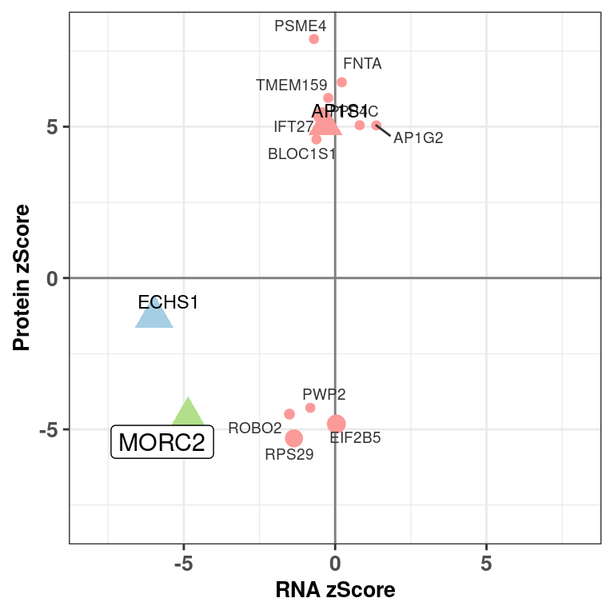
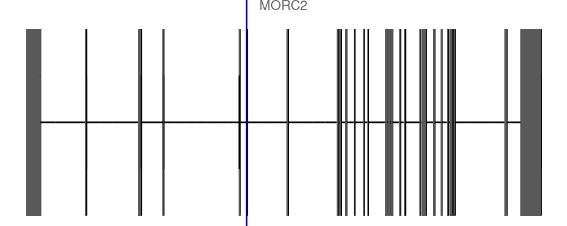

Figure 2c MORC2 dominant case example
smirnovd
2021-02-25
dev.off()## null device
## 1source(snakemake@input$config)
# Add necessaries for gene structures
suppressPackageStartupMessages({
stringsAsFactors=F
library(Gviz)
library(GenomicRanges)
library(ggbio)
library(EnsDb.Hsapiens.v75)
})
## Making a short cut to ensembl
edb <- EnsDb.Hsapiens.v75
# Load sample annotation
# sa <- fread('/s/project/mitoMultiOmics/multiOMICs_integration/raw_data/proteomics_annotation.tsv')
sa <- fread(snakemake@input$sample_annotation)
sa <- sa[USE_FOR_PROTEOMICS_PAPER == T]
# Read integrated omics file
# rp <- readRDS("/s/project/mitoMultiOmics/multiOMICs_integration/processed_data/integration/patient_omics.RDS") %>% as.data.table()
rp <- readRDS(snakemake@input$patient_omics) %>% as.data.table()
# Load patient's affected organs
patients <- fread(snakemake@input$patient_organs)
# patients <- fread('/s/project/mitoMultiOmics/multiOMICs_integration/processed_data/HPO/Patients_affected_organs.tsv')
######################################################fig_human <- gganatogram(data= patients[SAMPLE_ID == "OM27390"],
fillOutline='white', organism='human',
sex= unique(patients[SAMPLE_ID == "OM27390"]$sex),
fill="colour")+
theme_void() +
theme(plot.title = element_text(margin = NULL,face="bold", size = 9, hjust = 0.5),
plot.margin = margin(0, 0, 0, 0, "cm"))
fig_human
pdf(snakemake@output$fig_human, # "/s/project/mitoMultiOmics/multiOMICs_integration/Figures/Fig2_c_human.pdf",
width = 3, height =5, useDingbats=FALSE )
print(fig_human)
dev.off()## png
## 2samp <- rp[ SAMPLE_ID == "OM27390" & (outlier_class != "non_outlier" | causal_gene == T ) ]
fig <- ggplot(samp[gene_detected == "RNA and protein detected" ], aes(RNA_ZSCORE, PROTEIN_ZSCORE)) +
geom_vline(xintercept = 0, color = "grey50") +
geom_hline(yintercept = 0, color = "grey50") +
geom_point(aes(color= outlier_class, shape= gene_class, size = Semantic_sim )) +
xlab("RNA zScore") +
ylab("Protein zScore") +
scale_color_manual(breaks = c("non_outlier","RNA_outlier","Protein_outlier", "RNA_Protein_outlier"),
values = outlier_colors) +
scale_shape_manual(values = gene_shapes) +
scale_size(range = c(2.5, 6)) +
geom_text_repel(data= samp[gene_detected == "RNA and protein detected" & gene_class == "no rare variant" ],
mapping=aes(RNA_ZSCORE, PROTEIN_ZSCORE, label= geneID), colour= "grey20", #casual_gene
size= 2.5, show.legend = F)+
geom_text_repel(data= samp[gene_detected == "RNA and protein detected" & gene_class == "1 rare variant" & ( causal_gene ==F | is.na(causal_gene)) ],
mapping=aes(RNA_ZSCORE, PROTEIN_ZSCORE, label= geneID), colour= "black",
size= 3.1, show.legend = F) +
geom_label_repel(data= samp[gene_detected == "RNA and protein detected" & gene_class == "rare pot. biallelic variants" | causal_gene == T],
mapping=aes(RNA_ZSCORE, PROTEIN_ZSCORE, label= geneID ),
box.padding = unit(0.3, "lines"), colour= "black",
size= 4, show.legend = F ) +
coord_fixed( xlim = c( -8, 8 ), ylim = c( -8, 8 )) +
theme_bw() +
theme( axis.title.x= element_text( size= 10, margin = NULL,face="bold"),
axis.title.y= element_text( size= 10, margin = NULL,face="bold"),
legend.title = element_blank(),
axis.text.x = element_text(face="bold", size=10),
axis.text.y = element_text(face="bold", size=10),
legend.position = "none" ) # c(0.2, 0.8)fig
pdf(snakemake@output$fig, # "/s/project/mitoMultiOmics/multiOMICs_integration/Figures/Fig2_c.pdf",
width = 4, height =4, useDingbats=FALSE )
print(fig)
dev.off()## png
## 2Gene structure and variant
autoplot(edb, ~ gene_name == "MORC2", stat = "reduce" , names.expr="MORC2") +
theme_void() + scale_x_reverse() +
geom_vline( xintercept = 31345792 , colour = "darkblue")
dev.off()## null device
## 1unloadNamespace("ggbio")IyctLS0KIycgdGl0bGU6IEZpZ3VyZSAyYyBNT1JDMiBkb21pbmFudCBjYXNlIGV4YW1wbGUKIycgYXV0aG9yOiBzbWlybm92ZAojJyB3YjoKIycgIGlucHV0OgojJyAgLSBjb25maWc6ICdzcmMvY29uZmlnLlInCiMnICAtIHBhdGllbnRfb21pY3M6ICdgc20gY29uZmlnWyJQUk9DX0RBVEEiXSArICIvaW50ZWdyYXRpb24vcGF0aWVudF9vbWljcy5SRFMiYCcKIycgIC0gc2FtcGxlX2Fubm90YXRpb246ICdgc20gY29uZmlnWyJBTk5PVEFUSU9OIl1gJwojJyAgLSBwYXRpZW50X29yZ2FuczogJ2BzbSBjb25maWdbIlBST0NfREFUQSJdICsgIi9IUE8vUGF0aWVudHNfYWZmZWN0ZWRfb3JnYW5zLnRzdiJgJwojJyAgb3V0cHV0OgojJyAgLSBmaWdfaHVtYW46ICdgc20gY29uZmlnWyJGSUdVUkVfRElSIl0gKyAiL0ZpZzJfY19odW1hbi5wZGYiYCcKIycgIC0gZmlnOiAnYHNtIGNvbmZpZ1siRklHVVJFX0RJUiJdICsgIi9GaWcyX2MucGRmImAnCiMnIG91dHB1dDogCiMnICAgaHRtbF9kb2N1bWVudDoKIycgICAgY29kZV9mb2xkaW5nOiBoaWRlCiMnICAgIGNvZGVfZG93bmxvYWQ6IFRSVUUKIyctLS0KCmRldi5vZmYoKQpzb3VyY2Uoc25ha2VtYWtlQGlucHV0JGNvbmZpZykKCgojIEFkZCBuZWNlc3NhcmllcyBmb3IgZ2VuZSBzdHJ1Y3R1cmVzCnN1cHByZXNzUGFja2FnZVN0YXJ0dXBNZXNzYWdlcyh7CiAgc3RyaW5nc0FzRmFjdG9ycz1GCiAgbGlicmFyeShHdml6KQogIGxpYnJhcnkoR2Vub21pY1JhbmdlcykKICBsaWJyYXJ5KGdnYmlvKQogIGxpYnJhcnkoRW5zRGIuSHNhcGllbnMudjc1KQp9KQoKCgojIyBNYWtpbmcgYSBzaG9ydCBjdXQgdG8gZW5zZW1ibCAKZWRiIDwtIEVuc0RiLkhzYXBpZW5zLnY3NQoKCiMgTG9hZCBzYW1wbGUgYW5ub3RhdGlvbgojIHNhIDwtIGZyZWFkKCcvcy9wcm9qZWN0L21pdG9NdWx0aU9taWNzL211bHRpT01JQ3NfaW50ZWdyYXRpb24vcmF3X2RhdGEvcHJvdGVvbWljc19hbm5vdGF0aW9uLnRzdicpCnNhIDwtIGZyZWFkKHNuYWtlbWFrZUBpbnB1dCRzYW1wbGVfYW5ub3RhdGlvbikKc2EgPC0gc2FbVVNFX0ZPUl9QUk9URU9NSUNTX1BBUEVSID09IFRdCgojIFJlYWQgaW50ZWdyYXRlZCBvbWljcyBmaWxlIAojIHJwIDwtIHJlYWRSRFMoIi9zL3Byb2plY3QvbWl0b011bHRpT21pY3MvbXVsdGlPTUlDc19pbnRlZ3JhdGlvbi9wcm9jZXNzZWRfZGF0YS9pbnRlZ3JhdGlvbi9wYXRpZW50X29taWNzLlJEUyIpICU+JSBhcy5kYXRhLnRhYmxlKCkKcnAgPC0gcmVhZFJEUyhzbmFrZW1ha2VAaW5wdXQkcGF0aWVudF9vbWljcykgJT4lIGFzLmRhdGEudGFibGUoKQoKCiMgTG9hZCBwYXRpZW50J3MgYWZmZWN0ZWQgb3JnYW5zCnBhdGllbnRzIDwtIGZyZWFkKHNuYWtlbWFrZUBpbnB1dCRwYXRpZW50X29yZ2FucykKIyBwYXRpZW50cyA8LSBmcmVhZCgnL3MvcHJvamVjdC9taXRvTXVsdGlPbWljcy9tdWx0aU9NSUNzX2ludGVncmF0aW9uL3Byb2Nlc3NlZF9kYXRhL0hQTy9QYXRpZW50c19hZmZlY3RlZF9vcmdhbnMudHN2JykKCgojIyMjIyMjIyMjIyMjIyMjIyMjIyMjIyMjIyMjIyMjIyMjIyMjIyMjIyMjIyMjIyMjIyMjIyMKIysgZmlnLndpZHRoPTMsIGZpZy5oZWlnaHQ9NQoKZmlnX2h1bWFuIDwtIGdnYW5hdG9ncmFtKGRhdGE9ICBwYXRpZW50c1tTQU1QTEVfSUQgPT0gIk9NMjczOTAiXSwgCiAgICAgICAgICAgICAgICAgICAgICAgICAgIGZpbGxPdXRsaW5lPSd3aGl0ZScsIG9yZ2FuaXNtPSdodW1hbicsIAogICAgICAgICAgICAgICAgICAgICAgICAgICBzZXg9IHVuaXF1ZShwYXRpZW50c1tTQU1QTEVfSUQgPT0gIk9NMjczOTAiXSRzZXgpLCAKICAgICAgICAgICAgICAgICAgICAgICAgICAgZmlsbD0iY29sb3VyIikrIAogIHRoZW1lX3ZvaWQoKSArIAogIHRoZW1lKHBsb3QudGl0bGUgPSBlbGVtZW50X3RleHQobWFyZ2luID0gTlVMTCxmYWNlPSJib2xkIiwgc2l6ZSA9IDksIGhqdXN0ID0gMC41KSwKICAgICAgICBwbG90Lm1hcmdpbiA9IG1hcmdpbigwLCAwLCAwLCAwLCAiY20iKSkKZmlnX2h1bWFuCgpwZGYoc25ha2VtYWtlQG91dHB1dCRmaWdfaHVtYW4sICMgIi9zL3Byb2plY3QvbWl0b011bHRpT21pY3MvbXVsdGlPTUlDc19pbnRlZ3JhdGlvbi9GaWd1cmVzL0ZpZzJfY19odW1hbi5wZGYiLCAgCiAgICB3aWR0aCA9IDMsIGhlaWdodCA9NSwgIHVzZURpbmdiYXRzPUZBTFNFICkKcHJpbnQoZmlnX2h1bWFuKSAKZGV2Lm9mZigpCgoKc2FtcCA8LSBycFsgU0FNUExFX0lEID09ICJPTTI3MzkwIiAmICAob3V0bGllcl9jbGFzcyAhPSAibm9uX291dGxpZXIiIHwgY2F1c2FsX2dlbmUgPT0gVCApIF0KZmlnIDwtIGdncGxvdChzYW1wW2dlbmVfZGV0ZWN0ZWQgPT0gIlJOQSBhbmQgcHJvdGVpbiBkZXRlY3RlZCIgXSwgYWVzKFJOQV9aU0NPUkUsIFBST1RFSU5fWlNDT1JFKSkgKwogIGdlb21fdmxpbmUoeGludGVyY2VwdCA9IDAsIGNvbG9yID0gImdyZXk1MCIpICsKICBnZW9tX2hsaW5lKHlpbnRlcmNlcHQgPSAwLCBjb2xvciA9ICJncmV5NTAiKSArCiAgCiAgZ2VvbV9wb2ludChhZXMoY29sb3I9IG91dGxpZXJfY2xhc3MsIHNoYXBlPSBnZW5lX2NsYXNzLCBzaXplID0gU2VtYW50aWNfc2ltICkpICsgCiAgCiAgeGxhYigiUk5BIHpTY29yZSIpICsgCiAgeWxhYigiUHJvdGVpbiB6U2NvcmUiKSArCiAgc2NhbGVfY29sb3JfbWFudWFsKGJyZWFrcyA9IGMoIm5vbl9vdXRsaWVyIiwiUk5BX291dGxpZXIiLCJQcm90ZWluX291dGxpZXIiLCAiUk5BX1Byb3RlaW5fb3V0bGllciIpLAogICAgICAgICAgICAgICAgICAgICB2YWx1ZXMgPSBvdXRsaWVyX2NvbG9ycykgKwogIAogIHNjYWxlX3NoYXBlX21hbnVhbCh2YWx1ZXMgPSBnZW5lX3NoYXBlcykgKwogIAogIHNjYWxlX3NpemUocmFuZ2UgPSBjKDIuNSwgNikpICsKICAKICBnZW9tX3RleHRfcmVwZWwoZGF0YT0gc2FtcFtnZW5lX2RldGVjdGVkID09ICJSTkEgYW5kIHByb3RlaW4gZGV0ZWN0ZWQiICAmIGdlbmVfY2xhc3MgPT0gIm5vIHJhcmUgdmFyaWFudCIgXSwgCiAgICAgICAgICAgICAgICAgIG1hcHBpbmc9YWVzKFJOQV9aU0NPUkUsIFBST1RFSU5fWlNDT1JFLCBsYWJlbD0gZ2VuZUlEKSwgY29sb3VyPSAiZ3JleTIwIiwgI2Nhc3VhbF9nZW5lCiAgICAgICAgICAgICAgICAgIHNpemU9IDIuNSwgc2hvdy5sZWdlbmQgPSBGKSsgCiAgCiAgZ2VvbV90ZXh0X3JlcGVsKGRhdGE9IHNhbXBbZ2VuZV9kZXRlY3RlZCA9PSAiUk5BIGFuZCBwcm90ZWluIGRldGVjdGVkIiAgJiBnZW5lX2NsYXNzID09ICIxIHJhcmUgdmFyaWFudCIgJiAoIGNhdXNhbF9nZW5lID09RiB8IGlzLm5hKGNhdXNhbF9nZW5lKSkgXSwgCiAgICAgICAgICAgICAgICAgIG1hcHBpbmc9YWVzKFJOQV9aU0NPUkUsIFBST1RFSU5fWlNDT1JFLCBsYWJlbD0gZ2VuZUlEKSwgY29sb3VyPSAiYmxhY2siLCAKICAgICAgICAgICAgICAgICAgc2l6ZT0gMy4xLCBzaG93LmxlZ2VuZCA9IEYpICsgCiAgCiAgZ2VvbV9sYWJlbF9yZXBlbChkYXRhPSBzYW1wW2dlbmVfZGV0ZWN0ZWQgPT0gIlJOQSBhbmQgcHJvdGVpbiBkZXRlY3RlZCIgJiBnZW5lX2NsYXNzID09ICJyYXJlIHBvdC4gYmlhbGxlbGljIHZhcmlhbnRzIiB8IGNhdXNhbF9nZW5lID09IFRdLCAKICAgICAgICAgICAgICAgICAgIG1hcHBpbmc9YWVzKFJOQV9aU0NPUkUsIFBST1RFSU5fWlNDT1JFLCBsYWJlbD0gZ2VuZUlEICksIAogICAgICAgICAgICAgICAgICAgYm94LnBhZGRpbmcgPSB1bml0KDAuMywgImxpbmVzIiksIGNvbG91cj0gImJsYWNrIiwgCiAgICAgICAgICAgICAgICAgICBzaXplPSA0LCBzaG93LmxlZ2VuZCA9IEYgKSArIAogIAogIGNvb3JkX2ZpeGVkKCB4bGltID0gYyggLTgsIDggKSwgIHlsaW0gPSBjKCAtOCwgIDggKSkgKyAgCiAgdGhlbWVfYncoKSArCiAgCiAgdGhlbWUoIGF4aXMudGl0bGUueD0gZWxlbWVudF90ZXh0KCBzaXplPSAxMCwgbWFyZ2luID0gTlVMTCxmYWNlPSJib2xkIiksCiAgICAgICAgIGF4aXMudGl0bGUueT0gZWxlbWVudF90ZXh0KCBzaXplPSAxMCwgbWFyZ2luID0gTlVMTCxmYWNlPSJib2xkIiksCiAgICAgICAgIGxlZ2VuZC50aXRsZSA9IGVsZW1lbnRfYmxhbmsoKSwKICAgICAgICAgYXhpcy50ZXh0LnggPSBlbGVtZW50X3RleHQoZmFjZT0iYm9sZCIsICBzaXplPTEwKSwKICAgICAgICAgYXhpcy50ZXh0LnkgPSBlbGVtZW50X3RleHQoZmFjZT0iYm9sZCIsICBzaXplPTEwKSwKICAgICAgICAgbGVnZW5kLnBvc2l0aW9uID0gIm5vbmUiICkgICMgYygwLjIsIDAuOCkKCiMrIGZpZy53aWR0aD00LCBmaWcuaGVpZ2h0PTQKZmlnCgpwZGYoc25ha2VtYWtlQG91dHB1dCRmaWcsICMgIi9zL3Byb2plY3QvbWl0b011bHRpT21pY3MvbXVsdGlPTUlDc19pbnRlZ3JhdGlvbi9GaWd1cmVzL0ZpZzJfYy5wZGYiLCAgCiAgICB3aWR0aCA9IDQsIGhlaWdodCA9NCwgIHVzZURpbmdiYXRzPUZBTFNFICkKcHJpbnQoZmlnKSAKZGV2Lm9mZigpCgoKCiMnIEdlbmUgc3RydWN0dXJlIGFuZCB2YXJpYW50IAojKyBmaWcud2lkdGg9NSwgZmlnLmhlaWdodD0yCgphdXRvcGxvdChlZGIsIH4gZ2VuZV9uYW1lID09ICJNT1JDMiIsIHN0YXQgPSAicmVkdWNlIiAsICBuYW1lcy5leHByPSJNT1JDMiIpICsgCiAgdGhlbWVfdm9pZCgpICsgIHNjYWxlX3hfcmV2ZXJzZSgpICsgCiAgZ2VvbV92bGluZSggeGludGVyY2VwdCA9ICAzMTM0NTc5MiAsIGNvbG91ciA9ICJkYXJrYmx1ZSIpCmRldi5vZmYoKQoKCnVubG9hZE5hbWVzcGFjZSgiZ2diaW8iKQoKCgo=